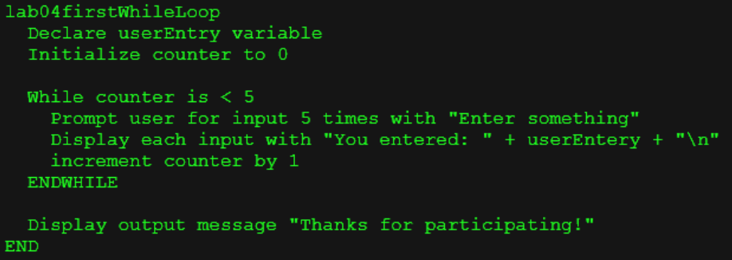
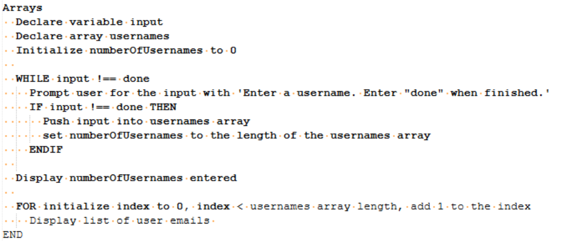
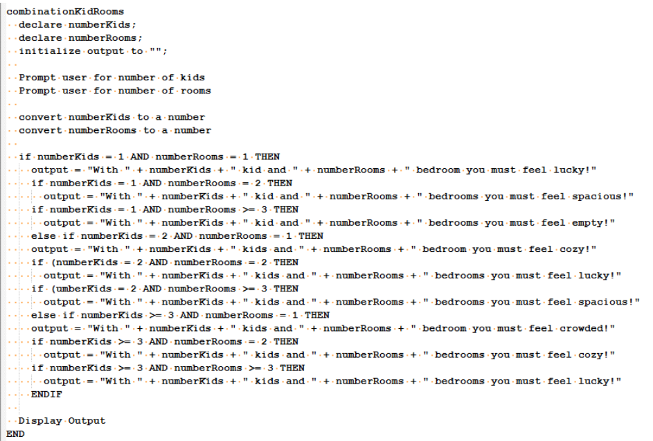
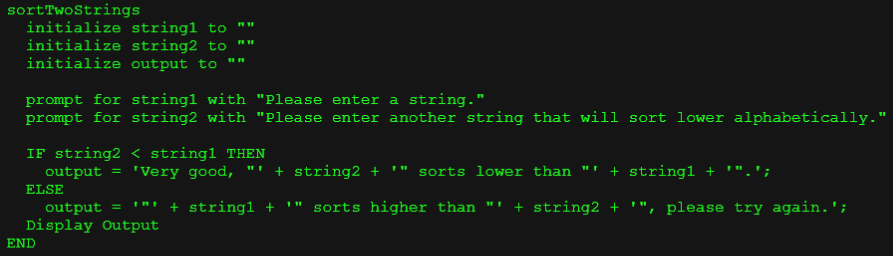
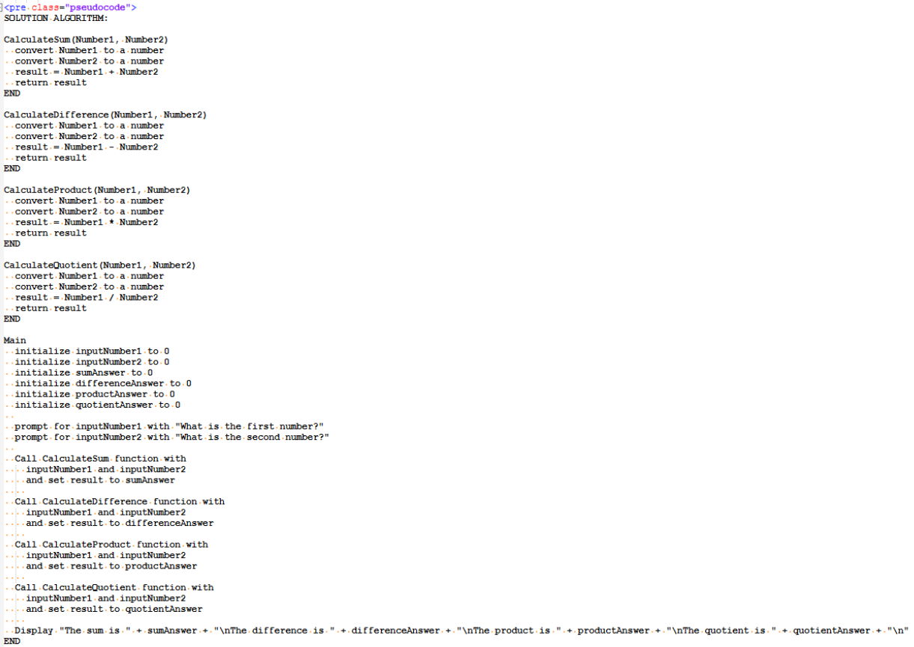
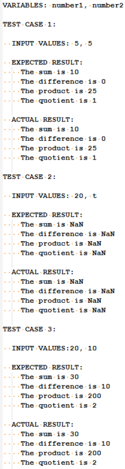
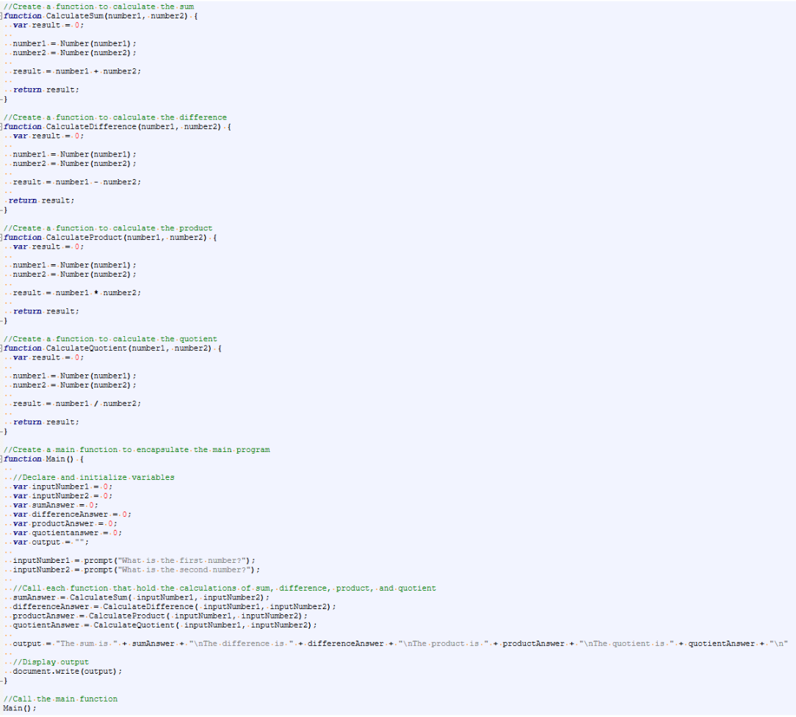
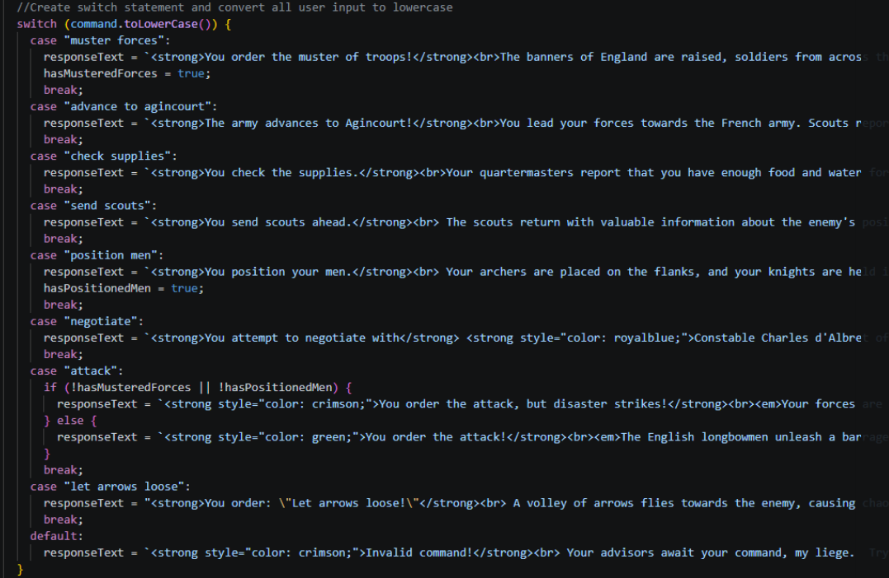
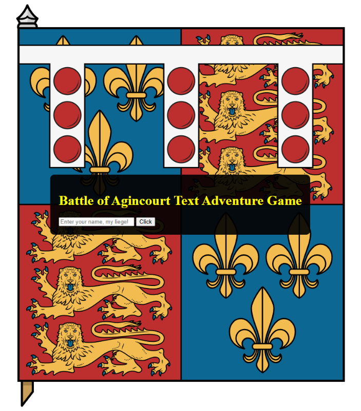

This class focuses on the structural logic and design principles required to build functional, reliable software. Throughout the course, we learned to utilize flowcharts and pseudocode for technical implementation using JavaScript.
Used For and While loops, including the implementation of counters and accumulators to manage repetitive data tasks efficiently.


Developed complex decision-making structures using nested IF and IF/ELSE statements to handle multi-layered conditions.


Used pseudocode to organize logic and solve technical problems conceptually before initiating the coding phase.

Applied test cases to predict and identify potential errors, ensuring program reliability through rigorous debugging.

Created functions to organize logic, significantly improving code maintainability and readability.

Utilized switch statements to provide a clean and efficient method for handling multiple outcome scenarios within the program.

A capstone project for the course: a text-based adventure game that utilizes all core competencies, from complex loops to interactive decision-making logic.

← Return to Academics